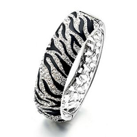

Выбор браслета

Выбирая браслеты, следует убедиться, что они впору: в пространство между браслетом и запястьем должен входить один палец. Если браслет состоит из звеньев, то они должны быть точно подогнанными друг к другу. Если хотя бы на одном участке расстояние между звеньями больше, чем положено, со временем там появятся заломы и браслет потеряет четкость линий. Застежка должна легко открываться и закрываться даже на новом браслете, не иметь трещин и иных повреждений. Браслет не упадет с руки, если в нем есть дополнительный механизм. Например, свободные цепочки или жесткий фигурный фиксатор в форме восьмерки.
Тонкие браслеты-цепочки рекомендуются только обладательницам узких запястий (или щиколоток). Им также подойдут браслеты, плотно обхватывающие запястье или локоть.
От выпирающих на запястьях косточек отвлечет внимание браслет из крупных подвижных звеньев, браслет со вставками из камней или круглый браслет средней толщины. Хорошо будут смотреться также пять-семь узких браслетов-колец, одетых одновременно.
Широкие запястья требуют массивных браслетов, которые ни в коем случае не должны плотно прилегать к руке. Браслеты с пестрыми узорами не сочетаются со строгой одеждой,
широкие и массивные браслеты лучше надевать с нарядами из гладких тканей.
Источник: http://www.kalitva.ru
© Мир бижутерии «Махаон», 2007–2012
Наш адрес: 443109 Самара, ул. Товарная, 70, офис 16
Тел.: +7 (846) 243-01-53